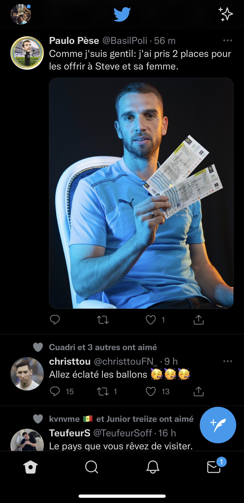
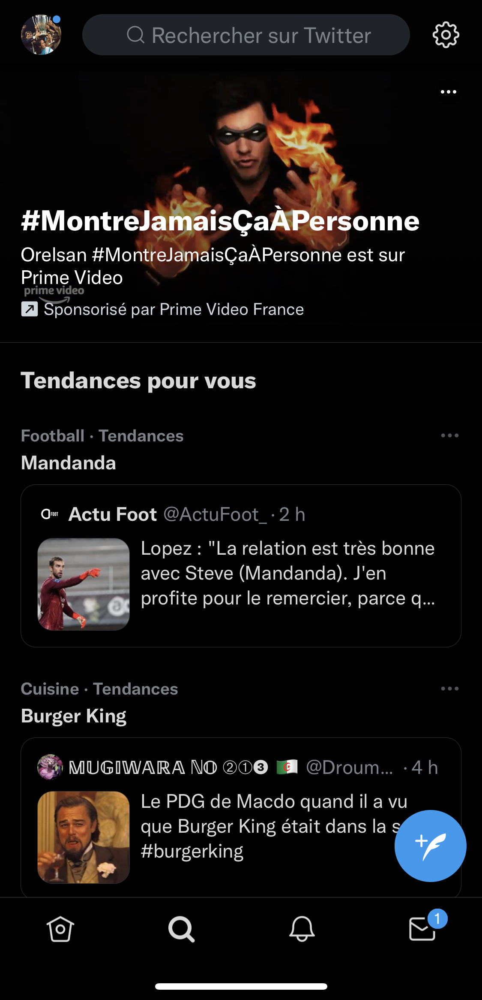
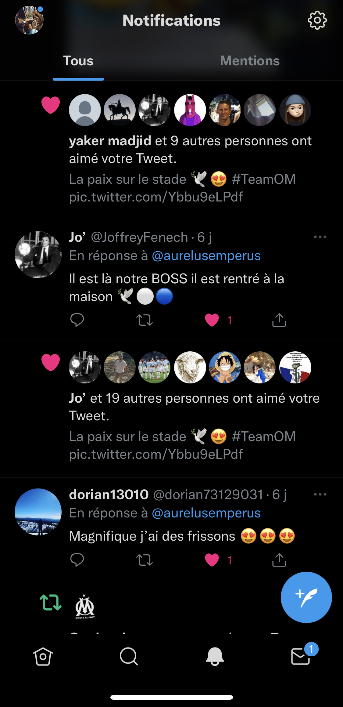
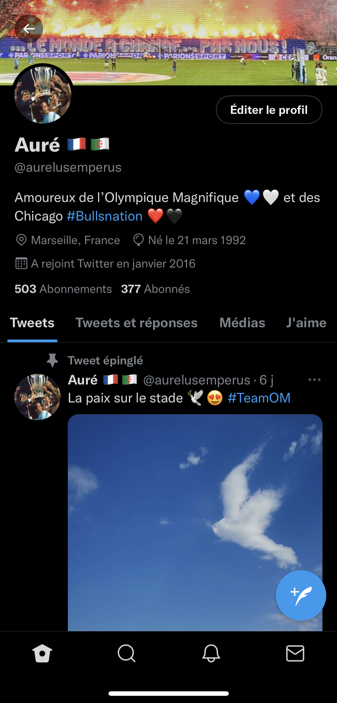

Présentation
Twitter est un réseau social que l'on ne présente plus. Le célèbre oiseau bleu est né le 21 mars 2006 (pile poil 14 anns après moi). Avec plus de 206 millions d'utilisateurs, il est l'un des réseaux sociaux les plus utilisés au monde, et créer une réelle influence en ce qui concerne l'information.
Utilisation
Ai-je vraiment besoin d'expliquer le fonctionnement de Twitter ?
L'onglet "TimeLine":
Ici nous pouvons retrouver l'ensemble des tweets des personnes que l'on suit.
L'onglet "Recherche":
Pour retrouver facilement des personnes ou chercher des infos avec les #
L'onglet "Notifications":
C'est ici que sont regroupées toutes nos notifications ainsi que celles choisies par Twitter succeptibles de nous plaire.
Notre profil:
Sur notre profil nous avons tout nos tweets, retweets, nos likes et commentaires.
Pourquoi j'aime cette application?
Twitter est mon réseau social préféré. J'ai commencé à créer une communauté de fans de l'OM avec qui j'échange énormement car c'est une de mes passions.
De plus, en suivant les bonnes personnes, on peut se procurer des informations sures et rapidement.